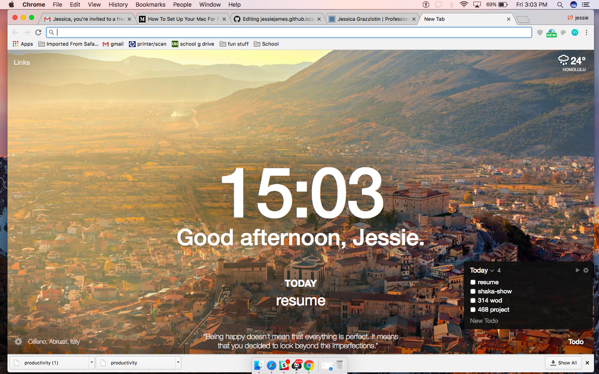

# This is just a collections of sites and things I found that help me become more focused and productive.
## Just tring to share with the world.
This article showed me how to take 15 min to set up my Macbook for [More Focused Work](https://betterhumans.coach.me/how-to-set-up-your-mac-for-focused-work-ab3565750059). It has a list of simple techniques and free apps to download to make work life easier and more focused. I really like this Chrome extension called [Momentum](https://momentumdash.com/).

### ... I'm sure there will be more to come. This is a list I will continue to add to.